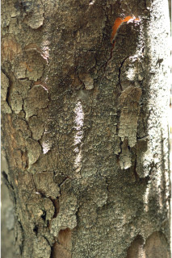
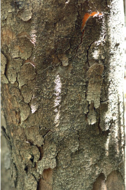
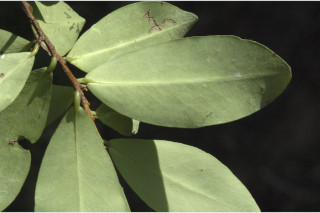
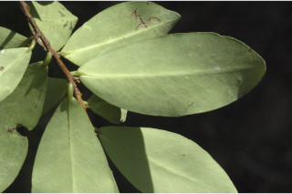
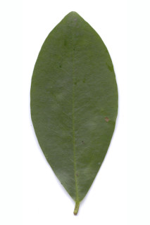
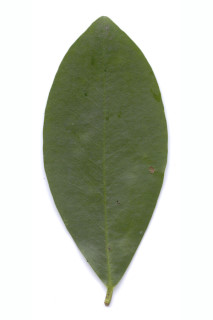
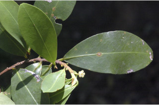
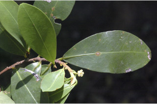

Small trees, up to 8 m tall.
Small trees, up to 8 m tall.
8 മീറ്റര് വരെ ഉയരമുളള ചെറുമരങ്ങള്.
மிகச்சிறிய மரங்கள், 8 மீ. உயரம் வரை வளரக்கூடியது
Bark grey, flaky; blaze red.
Bark grey, flaky; blaze red.
അടര്ന്നിളകിപ്പോകുന്ന, നരച്ചനിറത്തിലുളള പുറംതൊലി; വെട്ട്പാടിന് പിങ്ക്നിറം.
மரத்தின் பட்டை சாம்பல் நிறமானது, பெரிய செதில்களாக உதிருபவை; உள்பட்டை சிவப்பானது
Branchlets slender, flattened.
Branchlets slender, flattened.
പരന്നതും, നേര്ത്തതുമായ ഉപശാഖകള്.
சிறிய நுனிக்கிளைகள் மெல்லியது, தட்டையானது.
Leaves simple, alternate, distichous; stipules in pairs 0.3 cm long, lanceolate, caducous and leaving scar; petiole 0.2-0.4 cm long, flat above; lamina 4-8 x 1.5-3 cm, elliptic, apex obtuse to slightly acuminate with blunt tip, base acute, margin entire, glabrous, glaucous beneath, chartaceous; midrib canaliculate above; secondary_nerves inconspicuous; tertiary_nerves obscure.
Leaves simple, alternate, distichous; stipules in pairs 0.3 cm long, lanceolate, caducous and leaving scar; petiole 0.2-0.4 cm long, flat above; lamina 4-8 x 1.5-3 cm, elliptic, apex obtuse to slightly acuminate with blunt tip, base acute, margin entire, glabrous, glaucous beneath, chartaceous; midrib canaliculate above; secondary_nerves inconspicuous; tertiary_nerves obscure.
ലഘുവായ ഇലകള്, ഏകാന്തരക്രമത്തില്, തണ്ടിന്റെ രണ്ടുഭാഗത്ത് മാത്രമായടുക്കിയ വിധത്തിലാണ്; അടയാളം അവശേഷിപ്പിച്ചുകൊണ്ട് നേരത്തേ ഇളകിവീഴുന്ന, 0.3 സെ.മീ നീളമുളള കുന്താകാര അനുപര്ണ്ണങ്ങള് ജോഡികളായി ഉണ്ടാകുന്നു; മുകളില് പരന്നിരിക്കുന്ന ഇലഞെട്ടിന് 0.2 സെ.മീ മുതല് 0.4 സെ.മീ വരെ നീളം; പത്രഫലകത്തിന് 4 സെ.മീ മുതല് 8 സെ.മീ വരെ നീളവും 1.5 സെ.മീ മുതല് 3 സെ.മീ വരെ വീതിയും ദീര്ഘവൃത്താകൃതിയുമാണ്, പത്രാഗ്രം ഉപകോണാകാരം തൊട്ട് മുനപ്പില്ലാത്ത ദീര്ഘാഗ്രം വരെയാണ്, പത്രാധാരം നിശിതമാണ്; അരികുകള് അവിഭജിതം; അരോമിലം, കീഴെ നീലരാശി കലര്ന്നതാണ്, കടലാസ്പോലത്തെ പ്രകൃതം; മുഖ്യസിര മുകളില് ചാലുളളതാണ്; ദ്വിതീയ സിരകള് പ്രസക്തമല്ല; ത്രിതീയസിരകള് അവ്യക്തമാണ്.
இலைகள் தனித்தவை, மாற்றுஅடுக்கமானவை, இருநெடுக்கு வரிசையிலையடுக்கம் (டைஸ்டிக்கஸ்); இலையடிச்செதில்கள் ஒர் ஜோடி, 0.3 செ.மீ. நீளமானது, ஈட்டி வடிவானது, எளிதில் உதிரக்கூடியது மற்றும் தழும்புகளை ஏற்படுத்துகின்றன; இலைக்காம்பு 0.2-0.4 செ.மீ. நீளமானது, குறுக்குவெட்டுத் தோற்றத்தில் பிளேனோகான்வக்ஸ்; இலை அலகு 4-8 X 1.5-3 செ.மீ. நீள்வட்ட வடிவானது, அலகின் நுனி மழுங்கியது முதல் சற்று முனை மழுங்கிய அதிக்கூரியது, அலகின் தளம் கூரியது, அலகின் விளிம்பு முழுமையானது, கீழ்பரப்பு உரோமங்களற்றது, அலகின் கீழ்பரப்பு மெழுகு பூசினாற் போல் சாம்பல் நிறமுடையது, சார்ட்டேசியஸ்; மையநரம்பு மேற்புறத்தில் அலகின் பரப்பைவிட பள்ளமானது; இரண்டாம் நிலை நரம்புகள் தெளிவற்றது; மூன்றாம் நிலை நரம்புகள் கண்களுக்கு புலப்படாது.
Flowers axillary, solitary; petals yellow to white, anthers excerted.
Flowers axillary, solitary; petals yellow to white, anthers excerted.
പുറത്തേക്ക് തള്ളിനില്ക്കുന്ന കേസരങ്ങളും മഞ്ഞനിറംതൊട്ട് വെളുപ്പ്നിറംവരെയുളള ദളങ്ങളുളള പൂക്കള് കക്ഷങ്ങളില് ഒറ്റയായുണ്ടാകുന്നു.
மலர்கள் இலைக்கோணங்களில் காணப்படும்; அல்லி இதழ்கள் மஞ்சள் முதல் வெள்ளை நிறமானது, மகரந்ததாள்கள் இதழ்களை விட நீளமானது.
Drupe, narrow ellipsoid; 1-seeded.
Drupe, narrow ellipsoid; 1-seeded.
ഒറ്റവിത്തുള്ള കായ, വീതികുറഞ്ഞ, ദീര്ഘഗോളാകാര ഡ്രൂപ്പ് ആണ്.
உள்ளோட்டுத்தசைகனி (ட்ரூப்), குறுகிய நீள்வட்ட வடிவானது; ஒர் விதையுடையது.
 



 


 



 
